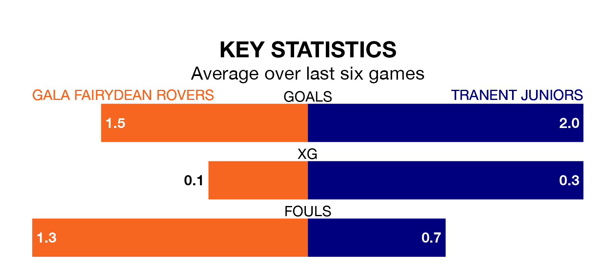

Gala Fairydean Rovers host Tranent Juniors in Saturday's match at Netherdale Football Ground looking to bounce back from defeat last time out in Highland and Lowland Football Leagues.
Gala Fairydean, who sit zero in the league after 23 games, fell to a 7-0 away defeat to Civil Service Strollers on January 6.
They face a Tranent Juniors side who also lost their last match, a 1-0 defeat to Berwick Rangers, and who sit fifth in the table.
With 45 goals in 19 games so far this season, Tranent Juniors are scoring more than average in the league with 2.4 goals per game. And they are conceding fewer than average, letting in 19 goals at a rate of 1.0 per game.
Gala Fairydean, meanwhile, are below average scorers, with 1.5 goals per game, compared to a league average of 1.8. They have conceded 2.6 goals per game.
Rovers are in bad form in Highland and Lowland Football Leagues, with one win and a draw from their last six games.
With four wins and two losses over that period, the Belters's form is much better – they have taken 12 points from 18, compared to the hosts' four.
Updated: 11:31, 09/01/24